Paint, brushes, paper, clay, markers, tools, and specialty materials need to be replenished as children create.
Youth-led · Toronto
Art should be accessible to every child.
Hands & Canvas expands access to creativity through free art workshops, community partnerships, original creative resources, and artist-led service projects.
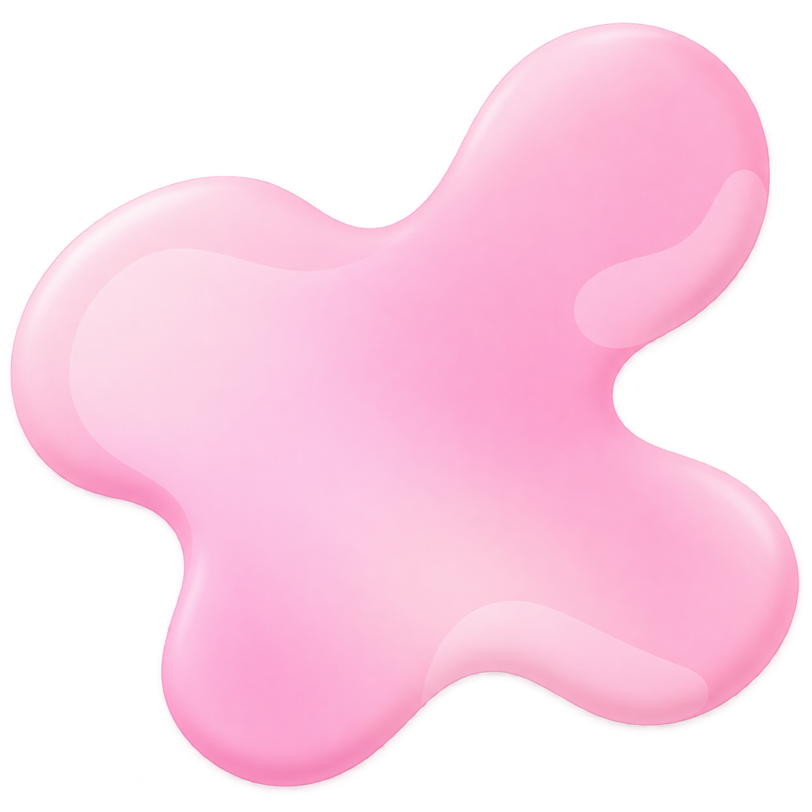
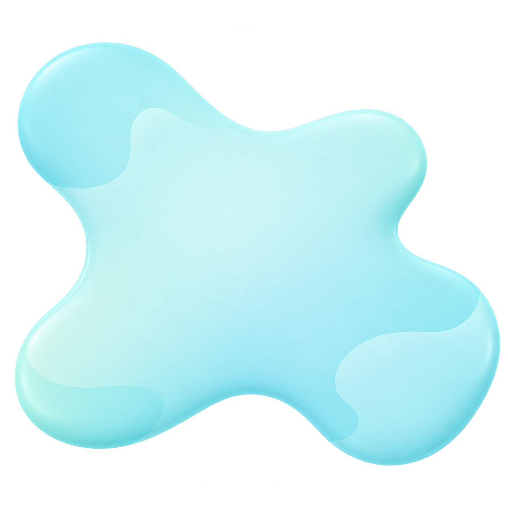
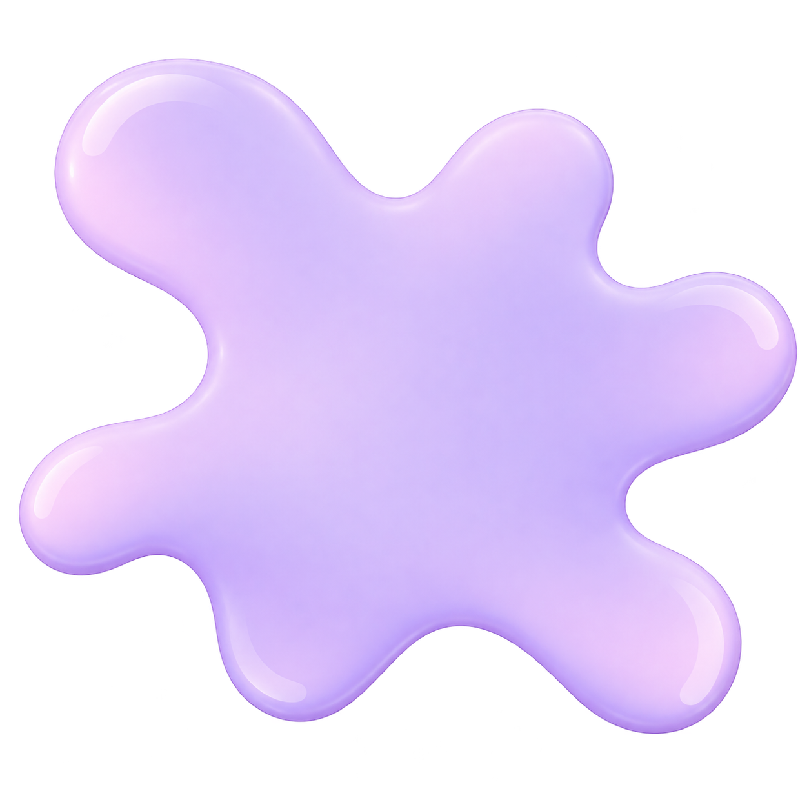
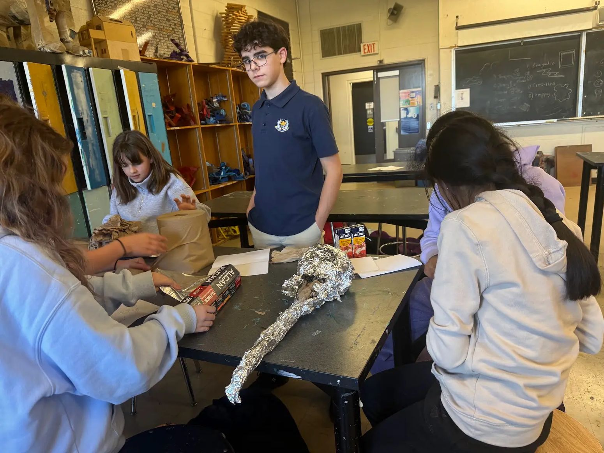
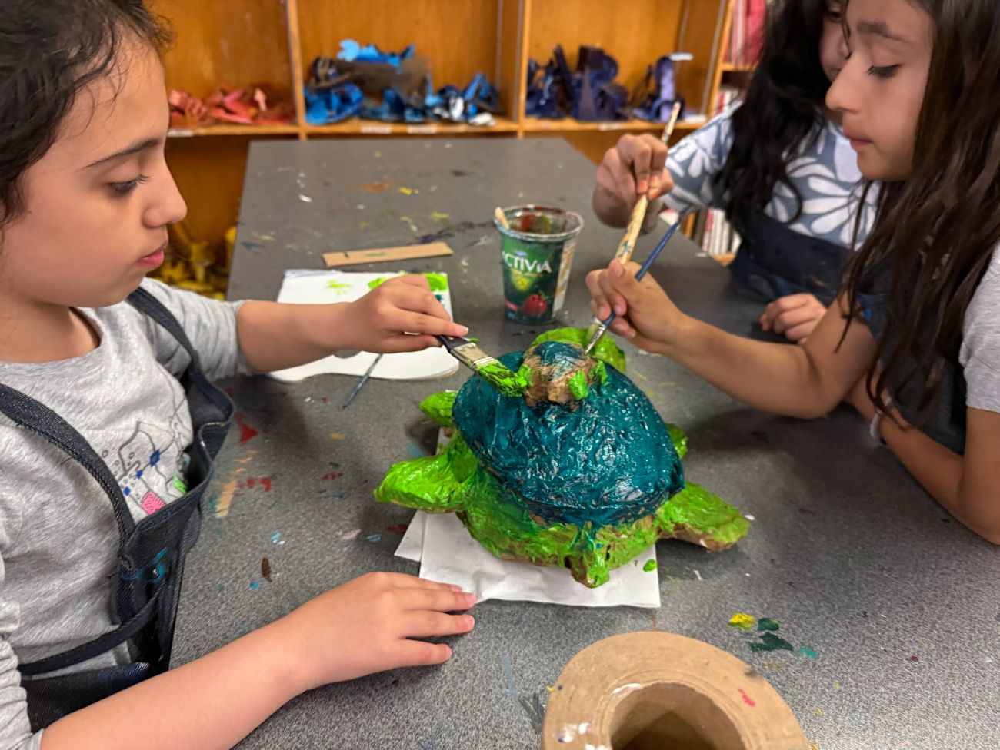
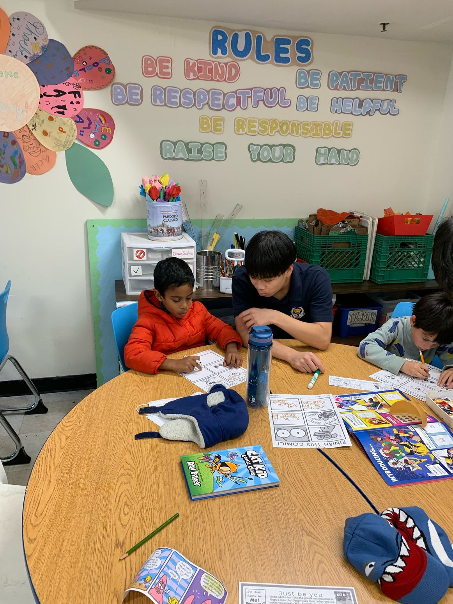
Get involved
Volunteer
Run workshops locally, create remotely, or help build the H&C team.
Find your way to create → Keep creativity freeDonate & Sponsor
Help keep materials on the table and workshops free for young artists.
Support creativity → Create togetherPartner
Bring Hands & Canvas into your school, community centre, or youth program.
Create with us →Creativity in motion
Give young artists room to try, change, and make something their own.
Art becomes more approachable when there is space to experiment instead of pressure to get it right the first time.
Explore WorkshopsWhy access matters
Creativity should not depend on circumstance.
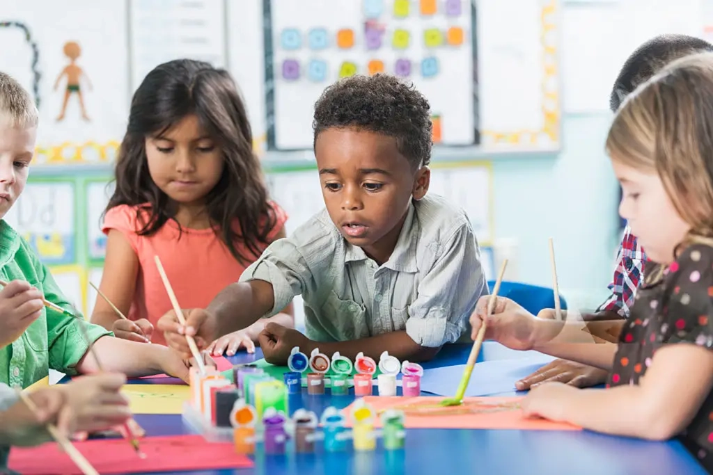
Cost, transportation, materials, and program availability can shape who gets frequent access to hands-on visual arts experiences.
A welcoming space, a few materials, and permission to experiment can make a blank page feel much less intimidating.
A child should be able to try something new without the price of the experience deciding whether they can participate.
Programs
Different ways to make, explore, and contribute.
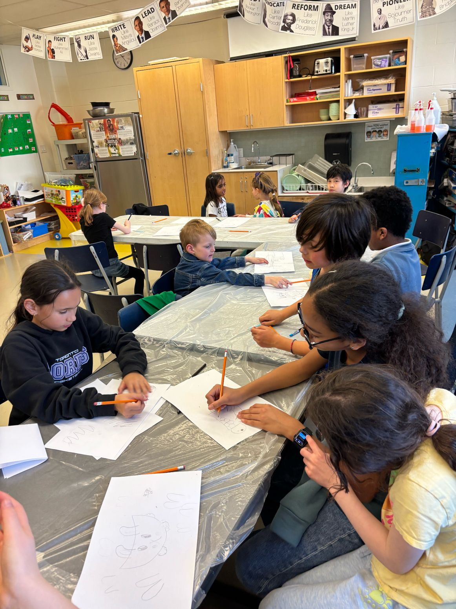
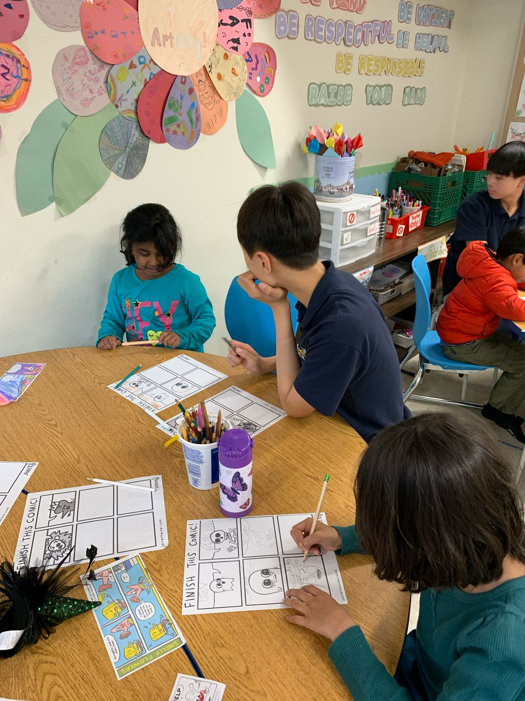
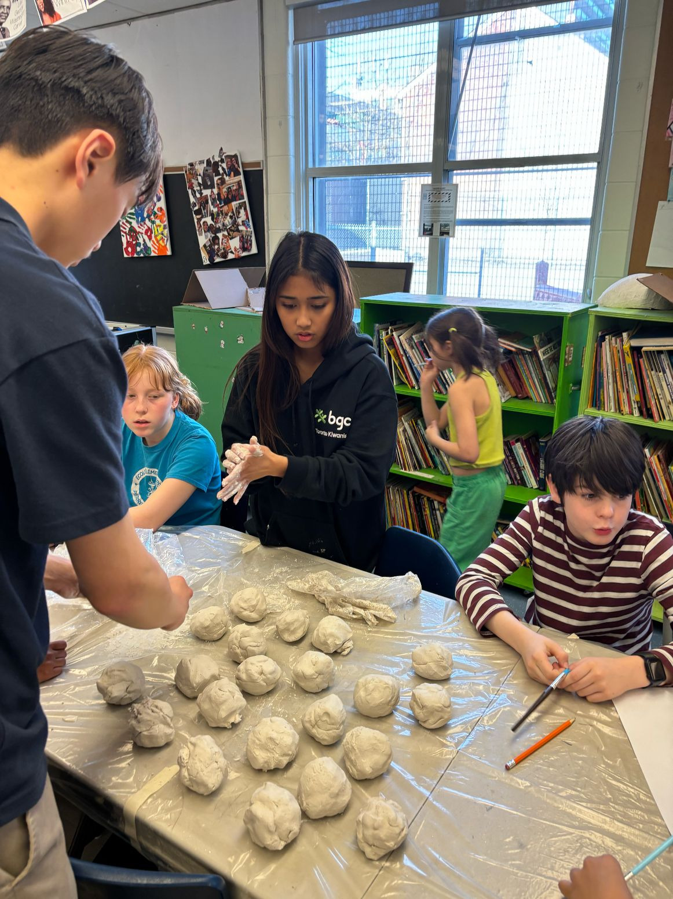
The table is where it becomes real.
Projects change. The invitation to create stays the same.
A workshop can begin with comics, clay, sculpture, painting, or a material someone has never tried before. The goal is to make starting feel possible — and leave room for each young artist to take the idea somewhere different.
See WorkshopsImpact so far
Growing one workshop, one partnership, and one creative table at a time.
0children & youth reached
0hours of free programming
0volunteers
Support the table
Help keep the next project free.
Support can become paper, paint, brushes, clay, drawing tools, art kits, and workshop restocks.
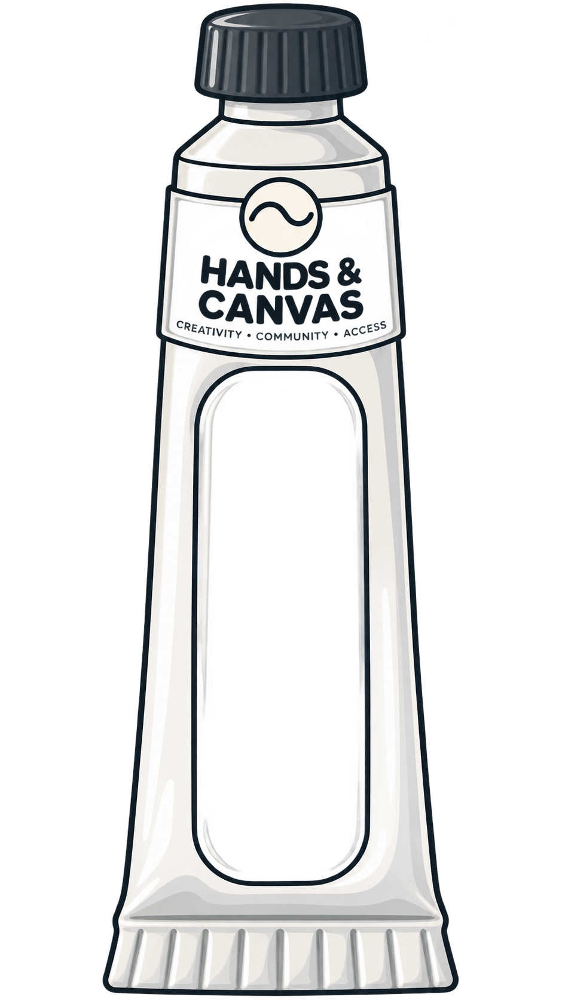